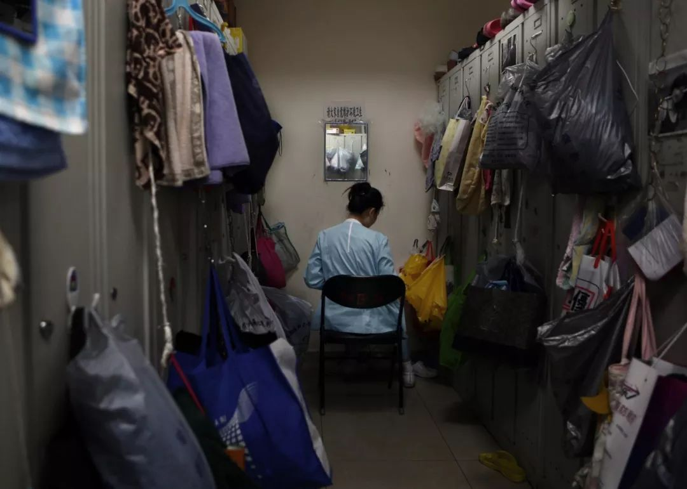
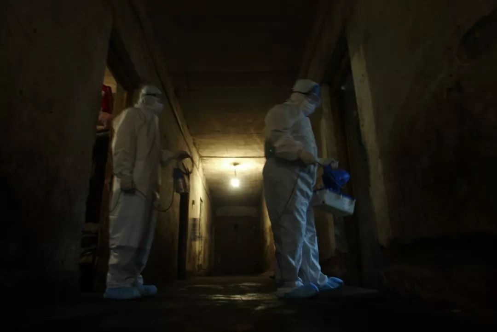
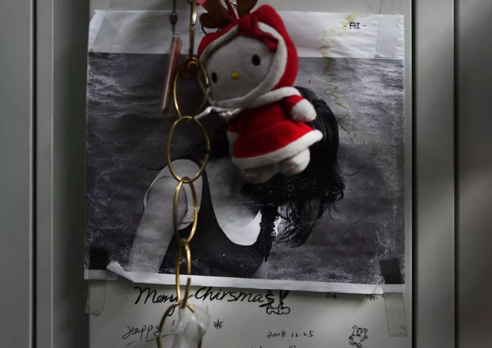
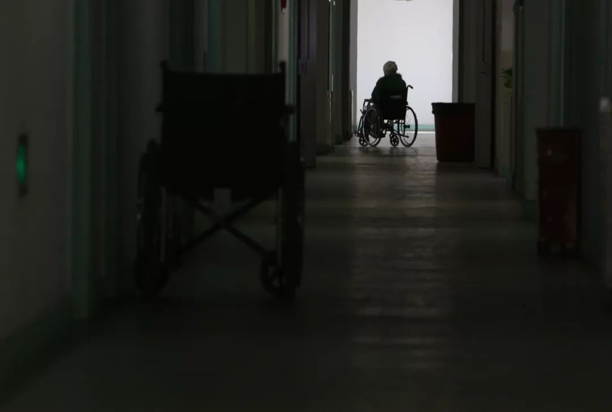
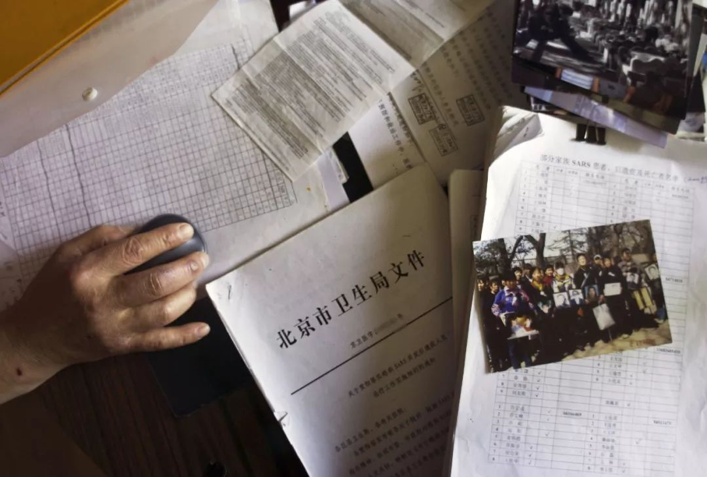
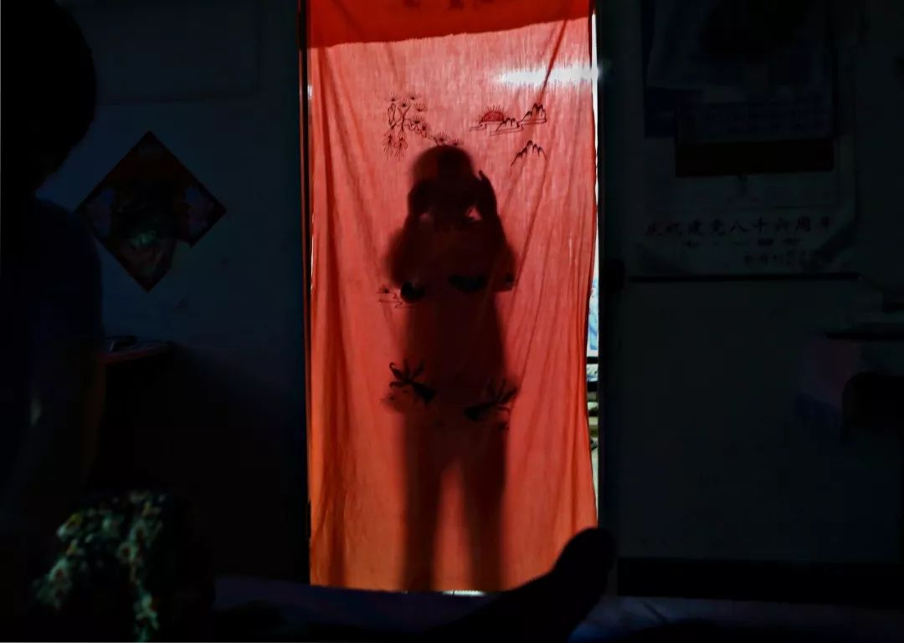
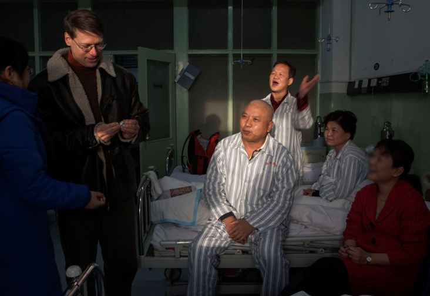

“我丈夫感染了新型冠状病毒，治愈了”
原文链接 备份链接 这是较早一批感染者之一，发病住院时还没有“新型冠状病毒”的称谓。经历17天隔离治疗，如今痊愈回家 2020年1月11日，工作人员在武汉华南海鲜批发市场西区（主要经营海鲜、水产等）进行检查。图/法新 文 |《财经》记者 …

编者按：2003年初，从中国南方开始的那场非典，在人们心中留下不少恐惧记忆。半年后疫情逐步被遏制，失控的局面开始转折，但留下的创伤并没有随灾难远去而结束。
由于激素类药物在抢救过程中被大量运用，一部分非典患者治愈后，患上股骨头坏死、肺部纤维化、抑郁症等疾病。之后媒体数次寻访，回到感染过SARS病毒的幸存者身边。摄影记者郑萍萍的一组照片，记录下8个家庭的生存状况。
在这些照片面前，你很难说出创伤具体是什么，可能是迈不上去的三四级台阶，可能是失去的7年爱情，也可能是家全散了。他们的背影或剪影让人心酸，不愿直面镜头的脸，想必经历过太多次生离死别的紧张和不安。
这不仅仅是8个家庭的命运。他们也留下启示，并不是一场瘟疫结束，问题就解决了，人类造成的灾难，每个普通的生命都在一起承担。

2013年5月，北京某医院里，休完产假回到医院的护士董薇，在更衣室为还在哺乳期的孩子吸奶。十年前，董薇在急诊室抢救病人时感染非典，愈后被查出股骨头坏死，离开了临床。
图、文丨郑萍萍
编辑丨陶若谷
本文获作者授权。相关报道原文刊载于2005年、2006年、2013年的《中国青年报》；2003年、2013年的《中国新闻周刊》。
非典那年的很多细节我记不清了。
宋大夫也和我一样，很少想起在那场被钟南山院士称为“没有硝烟的战争”中的经历。她甚至没有意识到非典已经过去那么多年了。
2003年的春末夏初，我和宋大夫一起在北京胸科医院非典病区里度过了近半个月，她的专业与镇定，给了我莫大的安慰。我甚至曾开玩笑地说，相对于外面隐藏在某个角落的非典病毒，病区里跟在她身边才是最安全的。
宋大夫生于上世纪50年代末，从医时不到20岁，赶上过水灾、地震，经历过霍乱。非典袭来，组建第一批抗击非典医疗队，她就报了名。她说没有害怕过，因为那是做医生的职责。
而我真的害怕过。
2003年3月27日，世界卫生组织宣布第一次将北京定为疫区，我和大多数人一样并没有意识到危险有多近。真正的转折点出现在4月20日，国务院举行的新闻发布会上公布，北京累计非典型肺炎病例339人，5天前这个数字还只是37人。是北京301医院军医的一封署名信让真相被公众所知。

2003年5月，北京某工厂宿舍发现确诊病例，流调队员在宿舍区消毒。
信中称，仅他知道309一家医院，就收治了60例SARS病人，到4月3日已有6人死亡……
恐慌开始蔓延，23、24日出现集中抢购生活用品现象。我也紧张起来，出门戴上口罩，回来一遍遍地洗手。
而真相的公示对于媒体人来说，是另一种信号。
借着无知者无畏的鲁莽，我进入了非典事件的核心区。每天跟着当班医生查房，拍摄医护人员的工作情况，简单和患者聊上几句，得到允许后拍些照片。初出茅庐的我，拍下的无非是“所见即所得”的瞬间。而面对这样一场大灾，真正让我思考它将给我们带来的改变，是非典后遗症患者的出现。
两年后
2003年11月，《南方周末》头版刊登了一张照片，那是透过一个高压舱门上的“猫眼”拍摄的，一些医院医护人员在高压氧舱里治疗非典后遗症。这是我第一次听说“非典后遗症”。直到整整两年后，我和某周刊的记者徐梅一起，坐了几个小时的公车，摸到位于京郊的一家私立医院，见到了刘远，他被确诊为双侧骨股头坏死的非典后遗症患者——那一刻起才真实地接触到这个人群。
刘远40岁出头，非典愈后两年多，突然感到左腿内侧疼痛的，被查出股骨头坏死。他是主管生产的经理，刘远沉默了许久说：“担心有什么用呢，慢慢来吧！”他的平静、压抑，刺痛了我，原来非典没有结束。
2005年6月，北京市卫生局出台《关于感染SARS并发后遗症人员工作实施细则》，对后遗症患者免费医疗。到2013年，进入免费治疗名单的非因公感染者近160人。另外，据非典后遗症治疗定点医院望京医院的陈卫衡教授介绍，仅他了解的因公感染的非典后遗症患者有140人左右。

2003年5月，北京胸科医院非典病区，即将返回办公区的医生在过渡区工作人员的指导下脱下防护服。
2005年，关于“后非典”阶段及非典后遗症患者的信息鲜见于媒体。我向几位曾在一线工作过的医生咨询，他们证实当时的一些“保命措施”，确实有股骨头坏死等后遗症出现的可能，但是没有官方正式表态。
我只好泡在郊区的几个所谓治疗股骨头坏死的专科医院，每天获得点零星的消息。吃闭门羹成了常事。即便找到了后遗症患者，听说要诉诸媒体，不少人退缩了。他们的敏感与反复，缘于他们担心周边的人对自己异样的眼光，担心家人受到干扰。
那时我遇见了董薇。第一次在急诊区的走廊里见到她，她正小心翼翼地走在脚步匆忙的同事当中，她很瘦，天蓝色的护士服穿在身上一摆一摆，看起来空荡荡的。那是她2005年12月1日重新开始工作的地方。
董薇只能上半天班，早8点到11点。为了照顾她，医院还特意在这个岗位上加派了人手。同事总是抢着干，所以大多数时间里，董薇就倚着操作台看着，递个东西盖个章。即便这样，回到家时，董薇还是觉得很累，什么事都不想做，晚上八九点钟就一定要睡觉。
再有一个月，就该恢复一天8小时工作了。董薇开始考虑换岗：“急诊的护士哪个走路不快？我能走稳就不错了。”为此，原本计划读护理专科，董薇将专业改为医学信息管理，她希望能留在医院里，“做个图书管理员也行”。

2013年5月，更衣柜上贴着董薇几年前的照片，那时刚刚做完植骨手术，她以为自己将永远成为一个残疾人。
2003年4月，她接诊了一名隐瞒非典接触史的发烧患者后被感染。出院后，董薇心存侥幸，直到被确诊为右侧股骨头坏死，她才意识到，等待自己的可能是终身残疾。此前，她一直以为是脱钙。
“感染非典那会儿，死了也就一了百了。股坏死，就算不拄拐，也是一个残疾人。” 董薇说。这对一个爱玩的姑娘意味着，下了班不能和同事逛街、打球、唱歌，远足旅行也只能成为一个梦想。
不仅如此，她还失去了7年的爱情。刚确诊股坏死时，董薇就正式向男友提出分手，告诉他自己不再是个“正常人”，并把所有可能面临的家庭、生育问题说给他听。男友的态度很坚决，不同意。董薇庆幸，遇到了一个好男人，安心治疗。然而没过多久，男友突然提出分手，原因是男友父母听说未来儿媳妇是个终身需要被照顾的人，坚决反对。毫无准备的董薇哭了，她说恨男友太懦弱。
2005年底，就在医学界还在对SARS病毒、激素和股坏死之间的关系纠缠不清时，北京几百名“非典”后股坏死患者正默默承受着身体、感情、家庭的一个又一个变故。
“那时董薇的心情很糟，很快就离开了这里，这件事对我们影响也很大。”在董薇曾经治疗的医院病房里，柳眉说着说着也哭了。她说，不仅为了董薇，一想起这两年的日子，就会有太多委屈和无助。
非典痊愈后，柳眉同样没有多想，股坏死在她看来是“不可能的事”。上班第三个月，疼痛越来越频繁，柳眉被确诊为双侧股坏死。“那时还没有组织集体治疗，一个人奔波在医院间检查治疗，感觉很失落。”
2005年3月，她做了植骨手术。术后3个月，医生告诉她恢复得不错，可以弃拐了。但又过了3个月被告知，手术结果并不乐观，可以说是一塌糊涂。柳眉惊呆了：“这句话对我就是晴天霹雳。”

2003年4月，北京某医院，被征调的医护人员和家属告别。
两年间的起起落落让本就纤细、内向的柳眉更加谨小慎微，对未来有太多担心。比如工作，哪个单位会养一个什么都做不了的员工呢？“很多不便是很难用语言说清的，更不是正常人能体会到的，我也是渐渐感受到。我现在就在担心，如果回到医院工作，一进门的那三四级台阶就成了问题。我也不知道怎么办，希望社会不要忘了我们。”
和这些没有成家的年轻人相比，四十出头的刘远“没有时间”去绝望，“我有家庭，有女儿，有员工”。2005年12月10日，匆忙结束第一次治疗，刘远收拾好东西等着家人来接，手边是10天治疗的费用清单，除去购买理疗仪的2900多元，各种治疗费有4000多元，“这么大一笔费用将来如何报销，还得跟公司再协商”。
按院方要求，一个疗程应该是三个月，10天的治疗对于他的病情没有意义，但作为主管生产的经理，他丢不下工作，想忙过年底这一段，春节后再来医院认认真真治疗。但是，在竞争激烈的社会里，离开是否就意味着永远失去，刘远不愿去想。
无论是刘远的事业，还是董薇的婚姻，所有问题几乎是非典愈后患者生活的翻版。两年，仅仅是艰难旅程的一小段。
三年后
2006年5月，北京东直门医院不远的一间平房里，张金萍静静地坐着，闭着眼。这是一间自建房，挤在胡同里，搁下一张双人床、一张单人床和一张书桌，就只剩半米的过道了。为了治病，两年前，张金萍一家三口从楼房搬到了这里。
2003年5月，走出非典病房的张金萍，每天都要到街上、公园里转转，总觉得看不够眼前的一草一木。寡言少语的丈夫变着花样给全家做好吃的，刚刚工作的女儿把新拍的艺术照挂到了墙上，生活又恢复到从前，清贫但有滋有味。

2005年，北京郊区一所医院里，患有非典后遗症的医护人员在这里接受集中康复治疗
半年后，张金萍陆续出现干眼、股骨头坏死、脑梗等病症，遍及全身的疼痛分分秒秒吞噬着她，治疗的艰辛与无望让她一次次企图以死来解脱。此时家中再遭变故，婆婆突发心脏病需要手术，二十出头的女儿脑瘤手术后落下了偏瘫。看着一夜白头的丈夫，曾天天以泪洗面的张金萍愣是不哭了，也不提自杀的事了。但是她“从没放弃过这个想法”，背着家人，她攒下了整整一大瓶安眠药：“眼睛越来越模糊，见不得光。等到看不见的那天我就走，不能再拖累老杨（丈夫）”。
张金萍断绝了所有交往，任由家里的电话铃响。“我不愿意见到以前的同事、朋友，看着他们一个个过得比我好，心里觉得委屈，挺强的一个人怎么就成这样了？” 与病友们，她也保持着距离，“别人都没我毛病多，看到他们恢复得好，我心里不舒服。”封闭在自己的世界里，张金萍就只剩下这间小屋。偶尔精神好时，她会架着双拐换换床单、擦擦桌子，更多的时候，她就闭着眼一遍遍地回想，“如果当初不去住院，就不会感染非典；如果当初……”
“医生说我的疼痛一定程度上是心理作用，我也进行过免费的心理咨询，没什么效果。”无法化解的绝望让张金萍变得更加脆弱。提起过去的两年，她的丈夫别过头去，没让眼泪掉下来。“我知道，背着我他一定哭过。我也不想总那么悲观，只是我笑不出来，这个家很久没有人笑过了。”
对54岁的方渤来说，家只是一间装满不幸的空屋子。
方渤，后来几乎出现在每一个有关非典后遗症的报道中。2003年，方渤一家9口人被感染，老伴没能挺过来。出院后，听说自己的血清可以治疗非典，方渤领着死里逃生的7口人去捐献血清。不料半年后，自己和两个女婿陆续查出股骨头坏死，接连的打击让家里每一个人都变得极为敏感、暴躁，父女之间、夫妻之间、岳父和女婿之间，“能吵的都吵了”。之后两个女儿先后和丈夫离了婚。家全散了。

非典后遗症患者老方和病友一直在为争取自己的权益而收集资料。
老方躲进医院，一住就是两年，即使逢年过节，也不愿回到那间空屋子。2006年2月，老方第二次做置换手术，“别人手术都是家属来签字，我的手术只有自己签。”
5月16日，是老方54岁的生日。一早起来，已经弃拐的老方瘸着腿扫地、拖地，满头大汗地把家收拾了一遍。身体的好转让老方心情舒畅不少，“我希望能自己高兴起来”。中午，病友给他过生日，话语中不小心触及过去的事，气氛一下子凝固了。“我们努力高兴，想尽办法分散注意力，但这是一道无法逃脱的网。我的怨气深深地藏在心里，虽然不说，但是无法消除”。

2003年病愈出院后，方渤做出了遗体捐献的决定。
关于非典后遗症患者的报道刊登后，读者刘梅打来电话，她让我看到了更多被非典“大事件”掩盖的刻骨铭心的伤痕。
刘梅的丈夫老汪也是非典后遗症患者。2004年1月18日，刘梅清楚地记得这个日子。那一天风很大，她掩饰着内心的震荡，拍着老汪的肩说，“没关系，瘫了我推你。”当天老汪被确诊为股骨头坏死。
从这一天起，老汪像变了一个人，生活全乱了。他是个才子，四十出头，工作一直挺顺。突如其来的诊断摧毁了生活的希望，作为男人，他极力维持着自尊。“我不愿当着外人拄拐，实在疼得厉害，也只拄个小拐杖；和爱人去买菜，不能负重，只好空手走在她身边，心里不是滋味；坐公车，有小姑娘让坐，我不知坐还是不坐。”
“这些微妙的心理是正常人很难体会的。”老汪说。为了帮助丈夫治病，刘梅四处奔波。但她的苦心并没有换来丈夫的理解，丈夫甚至拒绝和她说话。“我知道他心里苦，碰上这样的事，我也委屈。”对她来说，只要有一点点好转，就值得坚持下去。但丈夫的冷淡，反复不定的情绪，将她的热情一点点浇灭。
日子过得很沉很慢。2006年一个寒冷的早晨，刘梅推开窗，只觉得眼前一片模糊。她知道伤口越裂越大，再也没有力量去抚平丈夫的创伤了。4月4日，他们离婚了。站在马路上，刘梅想起三年前第一次提出离婚时，老汪什么话都没有说，跑到市场上买了几斤肉，刘梅最爱吃腌肉。
离婚后，刘梅并没有离开“家”，仍旧照顾老汪，做饭、敷药，陪着看病。“过些日子，等他的病有些好转，我就走”。刘梅想起对老汪说过的话，她违背了自己的诺言，这种痛像刀一样刻在心里。她说，如果不是非典，离婚会是一种痛快的解脱，不会像现在这样痛苦。
老汪也曾深深地自责：其实我也不是冲着她，但我心里有怨气，控制不住，只能撒在她身上。这都是心病。
敏感、抑郁、焦虑、偏执几乎是非典后遗症患者的普遍情绪。治疗效果的反复、生活的困窘、环境的压力，时时提醒着他们，原来的生活彻底毁了。现在心理治疗终于被纳入了医保范围，但对方渤他们来说，和心理问题纠在一起的种种现实问题依然无解。
十年后
一些女性好不容易把生活拉回到正轨，收获爱情，做了母亲，但怀孕期间仍面临股骨头塌陷、致残的危险；同时，一部分非典愈后女性出现严重的内分泌紊乱，“绝育”这个词一度在这个群体流传。对这些年轻的妈妈来说，与病痛相伴的还有她们在家庭和社会中遭遇的窘迫与孤独。
2003年3月29日，因在医院照顾患尿毒症的父亲，新姚的丈夫李刚突然高烧被送进了北京佑安医院。之后，这个北京郊区的农村家庭几乎遭到灭顶之灾，怀孕6个多月的新姚、婆婆、公公相继被确诊为非典。

2013年5月，晚饭后，上小学的儿子隔着帘子向里屋“张望”，新姚在给丈夫做按摩。自从丈夫被查出双腿十大关节坏死，9年来，新姚一直坚持每天为丈夫按摩。
那时，22岁的新姚还幻想能留下肚子里的孩子，她扒着床沿锻炼身体。但出院前，医生建议她拿掉孩子，新姚瞒着还未出院的丈夫做了引产手术。新姚说她永远忘不掉那一天。
因精神受到刺激，新姚落下癫痫的毛病，也因此丢了工作。本来不想再生，为了生病的老人还是答应了，出院半年，她又怀孕了。然而，丈夫被查出腿关节坏死，跑长途运输的李刚干得更卖命，他要抢在瘫痪之前给即将出生的孩子赚够奶粉钱。
孩子平安出世。但因为劳累，从二期塌陷发展为四期的李刚不得不接受股骨头置换手术。那是全家最困难的日子。车卖了、电视卖了、冰箱卖了，最后新姚把自己结婚时的金饰也卖了。原本以种地为生的一家人，只能靠着李刚父亲每月两三千元的退休工资维持生活。
2008年，北京红十字会开始向非典后遗症患者发放生活困难补助，有工作的每人每年4000元，没有工作的每人每年8000元，2012年，补助金额分别提高到4500元和9000元。
丈夫和婆婆每人每月可以领到700多元的补助。新姚没有在这个名单上。按规定，仅有股骨头坏死、肺部纤维化、抑郁症这三类疾病享受政府医疗减免政策，非典后遗症群体中常见的骨质疏松、血液病等其他疾病，不在减免范围。
家里的钱大半都花在一家四口看病上了。新姚说她“永远不能翻过非典那一篇”，但她相信“只要脑子不痴不傻，总能找到活路”。她想着，等病好了就摆个服装摊，这也是她年轻时的梦想。

2013年5月，晚饭后，新姚和丈夫、儿子在炕上聊天。
常静是北京最早感染非典的一批患者，当时医院对非典还缺乏足够的认识。出院后不久，常静觉得腿疼，检查结果是股骨头坏死。她以为自己年轻，病总能治好。
男友的母亲担心这种病有可能致残甚至影响生育，明确反对两人交往，矛盾一直延续到婚后。常静希望赶紧怀孕，多少也是为了向家里人证明，自己的身体没问题。为此，她瞒着医生偷偷把吃了四五年的治疗非典后遗症的药物停了，也没告诉产检的医院，一个人提心吊胆地熬了十个月。她对孩子的渴望超过了担心停药对身体的影响。
可困难才刚开始。孩子出生后，二期塌陷的股骨头已经无法负荷孩子的压力，常静只能坐着抱孩子。随着孩子渐渐长大，常静也不能陪孩子跑跑跳跳。在幼儿园，孩子的体能测试总是不合格，她觉得自责。每当孩子哀求着要抱抱，个子娇小的她都会咬咬牙满足他，可走不了10米，就又两腿发软。
常静是北京最早感染非典的一批患者，当时医院对非典还缺乏足够的认识。出院后不久，常静觉得腿疼，检查结果是股骨头坏死。她以为自己年轻，病总能治好。
男友的母亲担心这种病有可能致残甚至影响生育，明确反对两人交往，矛盾一直延续到婚后。常静希望赶紧怀孕，多少也是为了向家里人证明，自己的身体没问题。为此，她瞒着医生偷偷把吃了四五年的治疗非典后遗症的药物停了，也没告诉产检的医院，一个人提心吊胆地熬了十个月。她对孩子的渴望超过了担心停药对身体的影响。
可困难才刚开始。孩子出生后，二期塌陷的股骨头已经无法负荷孩子的压力，常静只能坐着抱孩子。随着孩子渐渐长大，常静也不能陪孩子跑跑跳跳。在幼儿园，孩子的体能测试总是不合格，她觉得自责。每当孩子哀求着要抱抱，个子娇小的她都会咬咬牙满足他，可走不了10米，就又两腿发软。

2013年5月，儿子撒娇让常静抱抱。
不知情的婆婆总是说她“娇气”。常静忍着疼痛做家务，她怕婆婆知道后，还会逼他们分开。她更不敢告诉婆婆自己丢了工作。住院治疗，也说成是上班，她只能被迫生活在层层谎言包裹的世界里。
学设计出身的常静仍希望找到一份可以胜任的工作，在并不稳固的婚姻中，给自己一点希望，让自己自立。可这样的工作并不好找，离家不能太远，不能长时间站立，又不能久坐。
这十年间，从政府承认非典后遗症患者的存在，到包括150多名非典后遗症患者在内的医保名单的诞生，以及被病友们称为 “7·28方案”生活困难补助的发放，政府在逐步为这个群体解决实际问题，而这些也是靠着他们自己努力让真相更多被政府和公众获知。
2013年，方渤和他的病友们开通了微博，通过“自媒体”为自己呼吁建立非典后遗症救助基金。
2009年12月，刘梅再婚了，娇小的她依偎在美国丈夫身边，冲着镜头笑得很美。这一天，病友们在望京医院，为刘梅举行了个小小的庆祝仪式。第一次，他们在我的镜头前，笑得眼泪都流了出来。

2009年12月，北京望京医院，刘梅和丈夫给在这里进行康复治疗的病友送来新婚喜糖。
2012年11月1日，董薇发来短信，我生宝宝了，在婆婆家坐月子呢。那一刻，我真实地感觉到她们的痛苦与欢笑，不是报道中的一个角色。
在董薇家里，非典也是必须被小心绕过的话题。她后来的婚事，也因为身体原因遭到公婆反对，爱人甚至做好了和家庭断绝关系的打算。直到孩子出世，她与公婆的隔阂才消减了一些。
作为医务人员，董薇渐渐从最初的慌乱与绝望中镇定下来，对于大多数人担心的激素问题，她觉得：“停药半年后应该代谢得差不多了”。即便真的因此残疾，她说自己也能接受。
董薇回到了医院，受到单位、同事的照顾，离开了一线， 但这也意味着 “这一辈子可能也就打打杂了”。生活还要继续，她和闺蜜一起逛街，和家人出门旅行，也开始和宝宝一起重新认识世界。
10年后，回想起这段路，董薇说痛苦是存在的，更多的是历练。“人生多些经历，不那么苍白、脆弱，这很重要”。重新穿上高跟鞋的董薇说，如今“不管困难多大，我都能看到明天。”
（为保护受访者隐私，文中人物除张金萍、方渤外均为化名。）
版权声明：本文所有内容著作权归属于搜狐享有，未经搜狐书面许可，不得转载、摘编或以其他形式使用，另有声明除外。
后台回复”读者群”, 加入更多讨论

原文链接 备份链接 这是较早一批感染者之一，发病住院时还没有“新型冠状病毒”的称谓。经历17天隔离治疗，如今痊愈回家 2020年1月11日，工作人员在武汉华南海鲜批发市场西区（主要经营海鲜、水产等）进行检查。图/法新 文 |《财经》记者 …
原文链接 备份链接 发热门诊排起长龙的就诊队伍似乎在宣告，这座城市正面临一次巨大的挑战。 全文4742字，阅读约需9分钟 ▲湖北各地出现口罩防护服等防疫物资短缺 拟请求国家支援。新京报我们视频出品（ID：wevideo） 距离除夕还有3 …
原文链接 备份链接 1月20日官方公布的感染武汉新型冠状病毒患者激增之前，武汉街头看起来和平时没多少不同。从1月20日开始，戴口罩的人突然多了起来。但其实这场病毒的袭击从大约一个月前就开始了，直到今天才引起更大范围的注意。 记者 | …
原文链接 备份链接 记者/梁婷 编辑/杨宝璐 宋建华 王康拍摄的金银潭医院病房照片 据国家卫健委最新消息，截至1月20日24时，共收到国内4省(区、市)累计报告新型冠状病毒感染的肺炎确诊病例291例(湖北270例，北京5例，广东14 …
原文链接 备份链接 正月二十六。 今天的阳光远不如昨天，但天空还很明亮。到了下午，有点阴。但不冷。看天气预报，这几天都会比较暖和。 还没起床，几天前曾捐款十万的画家朋友从纽约打来电话（不会有人说是通敌吧？），说另一位远在德国的苏姓画家也想 …